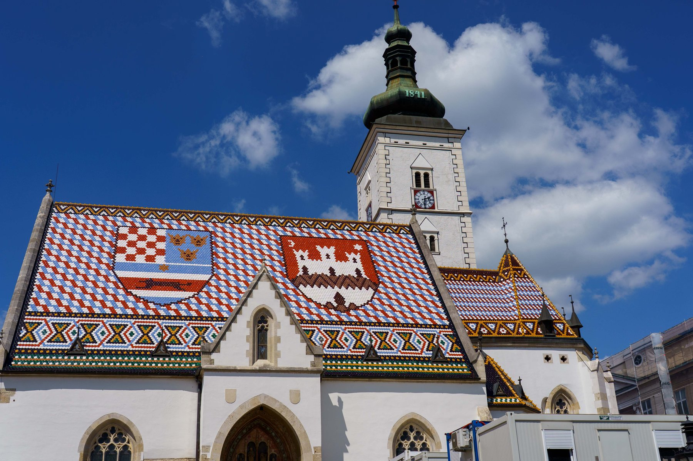
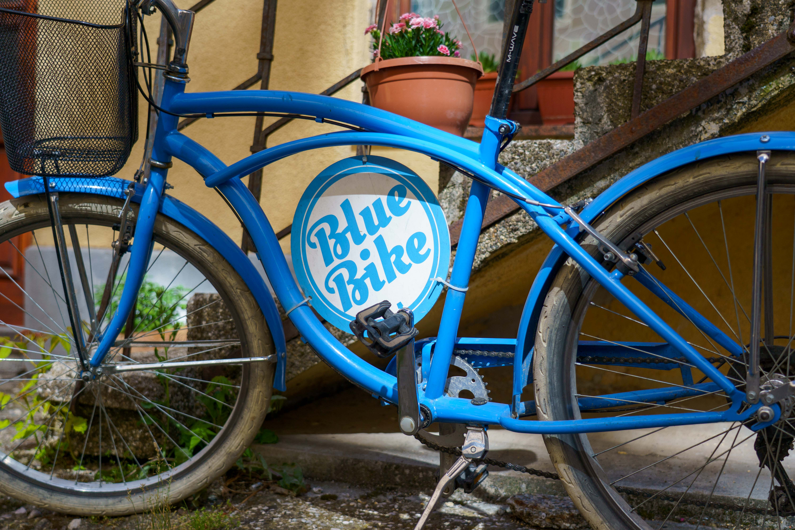
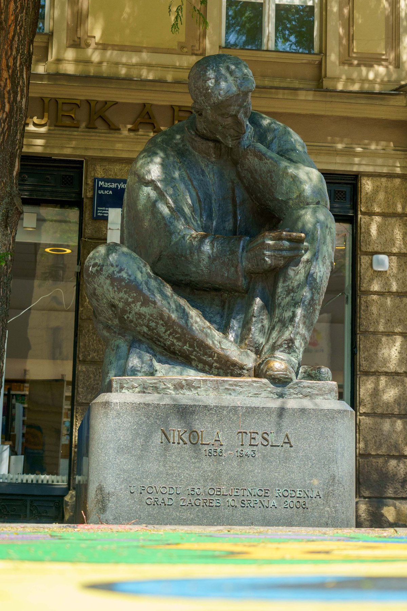
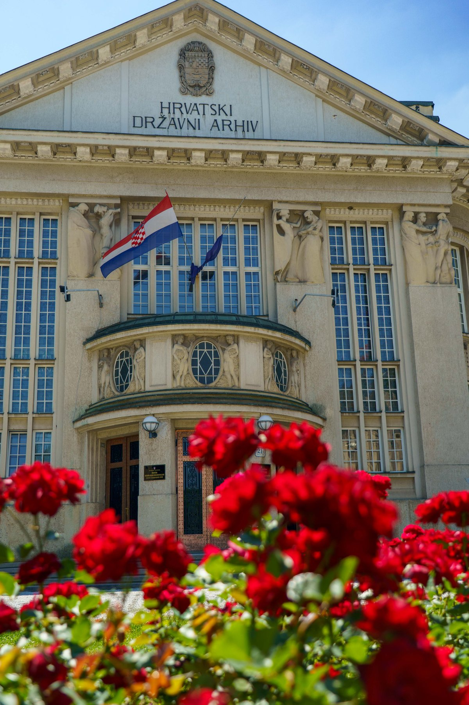
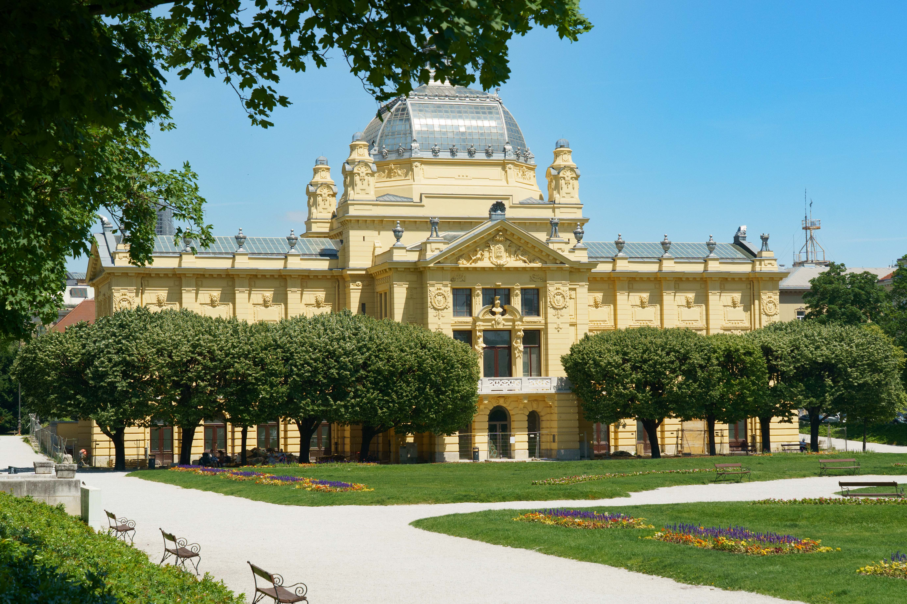
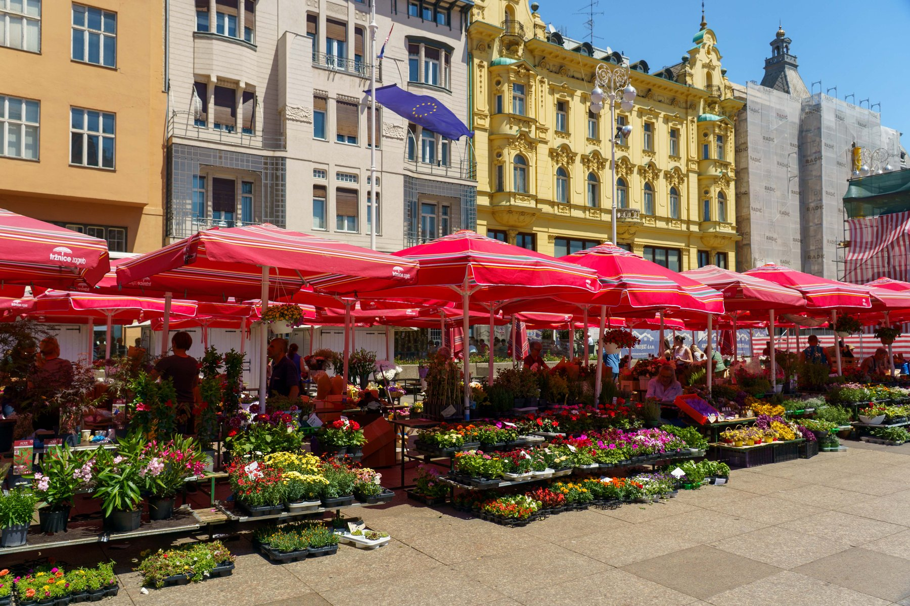
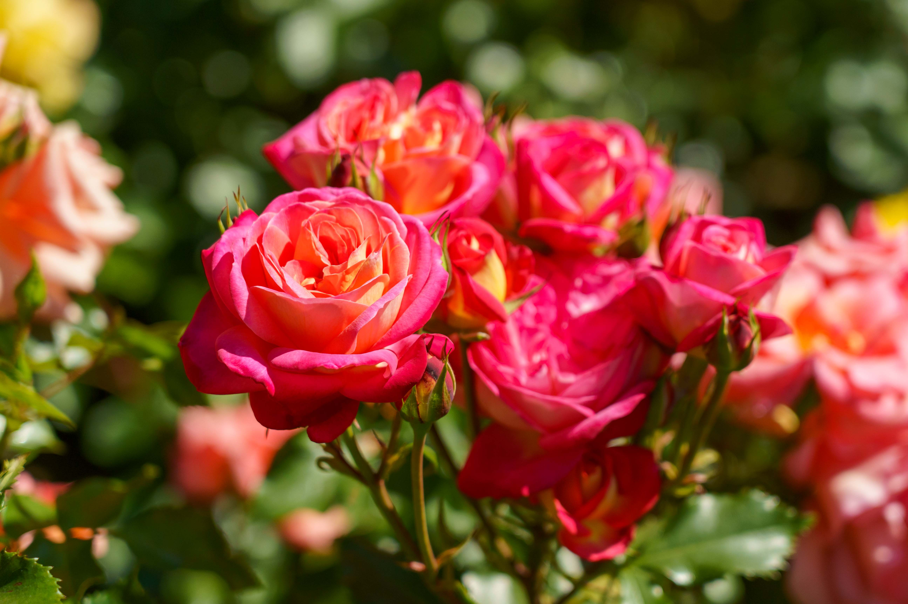
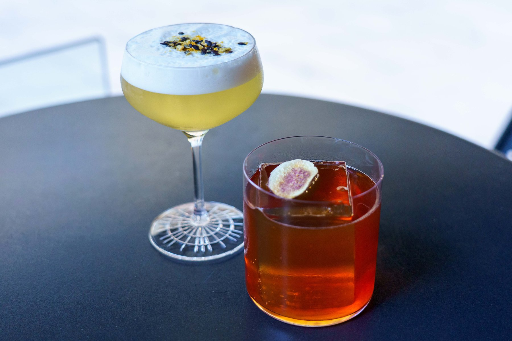
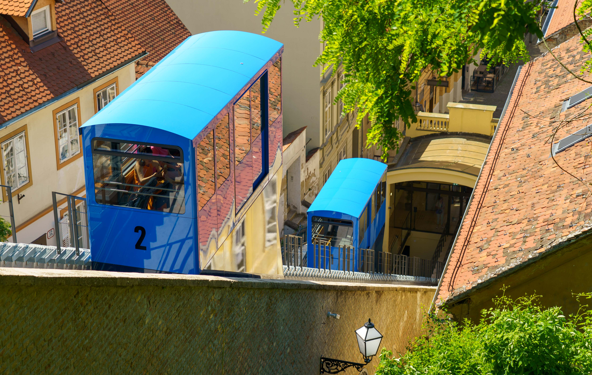

Zagreb
Croatia's capital is often overlooked in favor of the coast, which is exactly what makes it worth lingering in. Zagreb feels like a proper Central European city — grand Austro-Hungarian facades, leafy squares, and a slower, more local rhythm than the tourist-heavy Dalmatian towns to come. The Upper Town (Gornji Grad) is the heart of it: cobbled lanes wind past St. Mark's Church and its famous tiled roof, a bronze Nikola Tesla sits mid-thought outside a pharmacy, and one of the world's shortest funiculars still climbs the hill after more than 130 years in service. Down below, Dolac Market bursts with flower stalls and produce each morning, and the café culture along Tkalčićeva Street spills onto the sidewalks well into the evening. It's a city built for wandering — bike tours through the old town, wine bars tucked into stone cellars, and roses blooming everywhere from the Botanical Garden to the courtyard of the Croatian State Archives. Zagreb doesn't try to dazzle; it just quietly rewards you for showing up.








